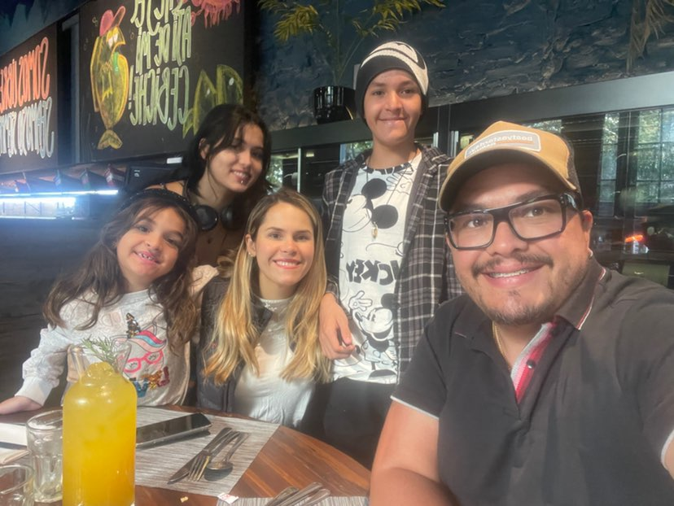
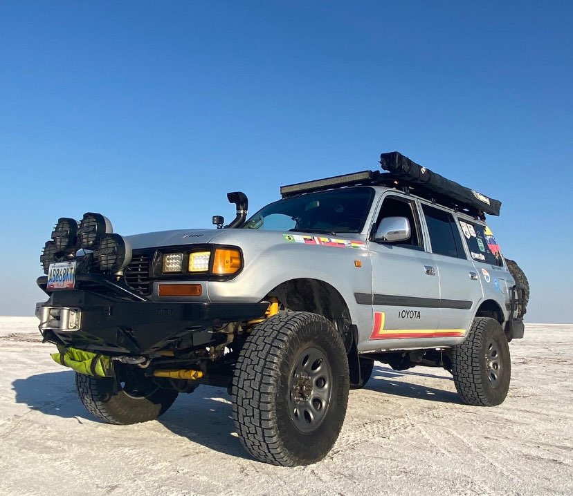
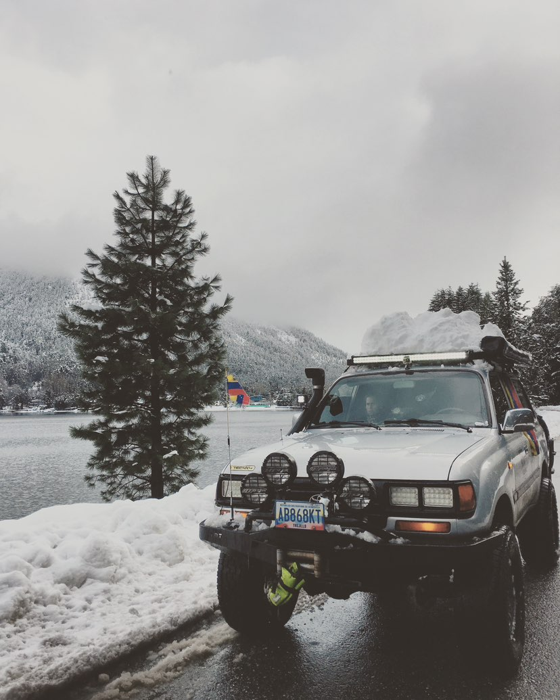

Gran Sabana · Venezuela
El lugar al que siempre volvemos.
Nacidos y criados entre estos paisajes, los Zurita llevan la Gran Sabana como parte de su identidad. Una historia de casa, turismo y caminos que continúan cambiando con cada visita.

Más de 60.000 kilómetros por Sudamérica han reunido rutas, encuentros y recuerdos. Aquí compartimos lo que aprendimos en familia, con cuidado por cada lugar y respeto por lo que aún falta confirmar.
Estas notas resumen experiencias y recorridos compartidos por la familia. Las fechas, tracks, nombres de campamentos y detalles específicos se añadirán cuando Jairo los confirme.
Nacidos y criados entre estos paisajes, los Zurita llevan la Gran Sabana como parte de su identidad. Una historia de casa, turismo y caminos que continúan cambiando con cada visita.

La familia ha recorrido íntegramente la emblemática Ruta 40 de norte a sur y de sur a norte. Un gran eje para contar cómo cambian los paisajes y las perspectivas cuando una travesía se vive en ambos sentidos.

La Patagonia ha sido visitada en cuatro oportunidades y en cada una de las estaciones del año. La bitácora puede reunir esas miradas y los preparativos que requiere volver a un territorio amplio.

La ruta amazónica BR-319 forma parte de las expediciones de la familia. Para narrarla con rigor, conviene acompañar el relato con las fechas, condiciones y recomendaciones que Jairo confirme.

Entre las experiencias mencionadas por la familia están la ruta de volcanes argentinos en solitario, cruces de los Andes desde Mendoza hacia el sur, Campo de Piedra Pómez, Fiambalá y La Rioja.

La familia recuerda rutas por zonas selváticas de Paraguay, caminos desafiantes en Guyana y la costa del nordeste brasileño desde Bahía hasta Florianópolis.
Una buena historia de ruta no solo cuenta adónde llegamos; también explica lo que aprendimos y cómo cuidamos el lugar.
La bitácora crecerá con relatos en primera persona, material fotográfico de la familia y datos revisados por el guía.
Una expedición se construye antes de encender el motor: revisar el vehículo, calcular distancias, considerar el clima y conocer las condiciones de los caminos. En zonas remotas también importan la comunicación, la autonomía y saber cuándo detenerse o cambiar de plan.
Al volver, compartir una ruta significa ser precisos con lo que sabemos y transparentes con lo que falta confirmar. Por eso las ubicaciones de la demo son aproximadas y no deben usarse como track. Las futuras fichas se completarán con información validada y las recomendaciones de Jairo.
También queremos contar las personas que hacen posible cada viaje: las comunidades anfitrionas, los guías locales, los viajeros que ayudan en el camino y quienes trabajan para conservar la naturaleza y las expresiones culturales de cada lugar.